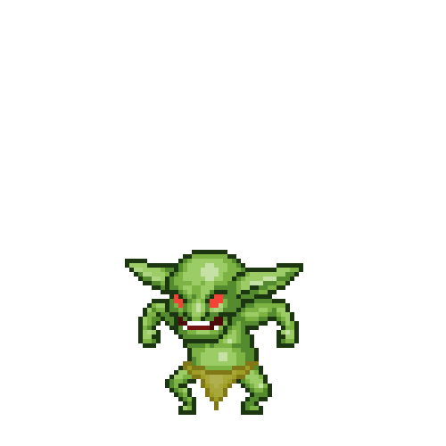
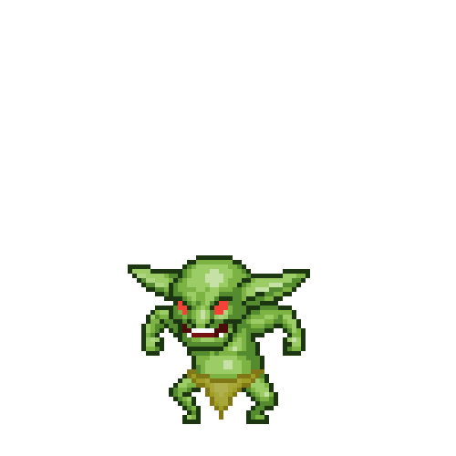

Choose Your Enemy
 

Ghastly Goblin
A goblin is a monstrous creature from European folklore, first attested in stories from the Middle Ages. They are almost always small and grotesque, mischievous or outright malicious, and greedy, especially for gold and jewelry. They have magical abilities similar to a demon.
Azure Lion
Mountain lions are a variety of big cat, usually found in the Alterac Mountains and Hillsbrad Foothills. Across the open plains of Mulgore many animals roam, including mountain lions (called cougar). Cougars can also be found in Thousand Needles.
Ravenous Ogre
Ogres are straightforward in combat and often suffer as much punishment as they dish out, relying on their strength and stamina to carry them to victory. There is proof that at least one ogre had all of his teeth knocked out and lived to fight another day.
Sadistic Sorcerer
is the living proof of the maxim that power corrupts and that absolute power corrupts absolutely. The mage who has delved too deeply into Things Man Was Not Meant to Know and mastered The Dark Arts. They achieved power with the sacrifice of their soul.